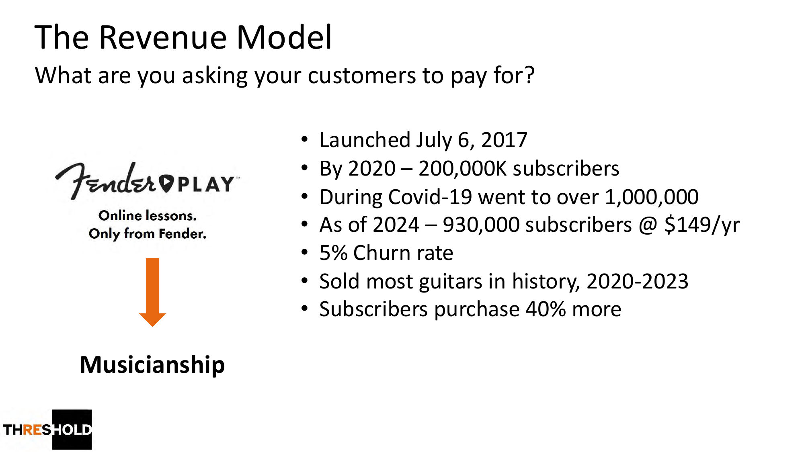
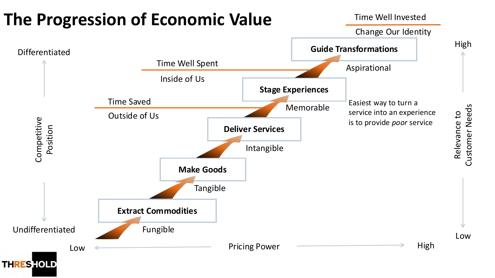
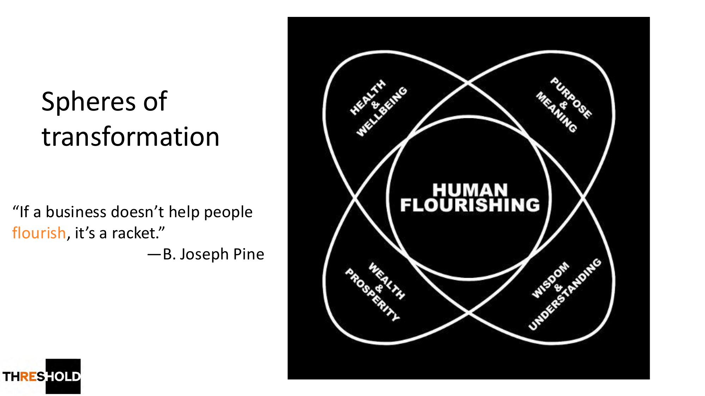
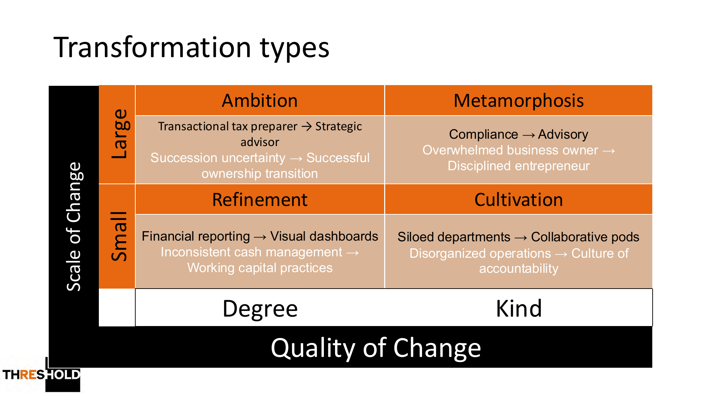
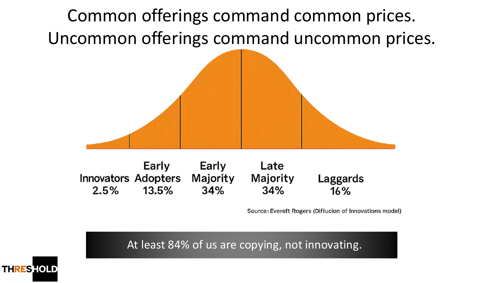
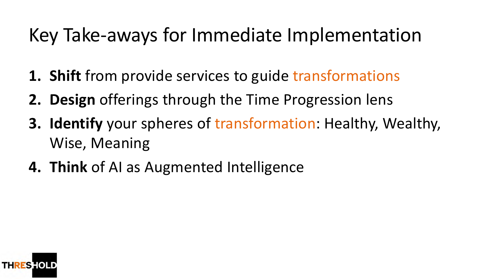

AI 正在快速压缩“交易型服务”的价值
在 AI 快速发展的时代，许多传统业务正面临同一个挑战：过去依靠专业知识、人工流程和信息不对称形成的服务价值，正在被 AI 快速压缩。
AI 可以更快地生成报告、整理资料、回答问题、完成表格、制作方案、自动跟进客户，并大幅降低许多服务型工作的交付成本。因此，企业如果仍然停留在“完成任务”“交付服务”“节省时间”的层面，就会越来越容易被替代、被比价、被商品化。
Ron Baker 在 From Transactions to Transformations 中提出了一个非常重要的商业趋势：未来真正有定价权、有差异化、有客户粘性的企业，不只是卖产品、卖服务，甚至不只是卖体验，而是要帮助客户完成真正的转变。
客户不是来“买”，而是来“成为”
这个 talk 的核心可以总结为一句话：AI 时代，企业要从“帮客户完成任务”升级为“带客户完成转变”。
过去的商业关系更多是 transaction（交易）：客户提出需求，企业完成交付，客户付款，关系结束。但 transformation economy 的逻辑完全不同——客户希望通过与企业合作，变得更健康、更富足、更清醒、更有秩序、更有能力，更接近自己理想中的生活状态。
这就是 “Where Customers Become, Not Buy” 的含义。Fender 把产品从“卖吉他”重新定义为“卖音乐能力（Musicianship）”，订阅制 Fender Play 反而让它在 2020–2023 卖出史上最多的吉他。

经济价值的五层进阶
talk 中最重要的框架是 The Progression of Economic Value（经济价值进阶）。企业价值可以分为五个层级，越往上，差异化越强、客户相关性越高、定价权越大：
- Commodities 原材料——几乎没有差异化，定价能力最低。
- Goods 产品——可被比较、复制、替换。
- Services 服务——帮助客户节省时间。
- Experiences 体验——给客户一段难忘、有感受、有记忆点的过程。
- Transformations 转变——帮助客户改变能力、状态、身份与人生轨迹。

在 AI 时代，最危险的是停留在 service 层。因为很多 service 本质上是 task completion：写报告、整理资料、生成方案、做计算、回答问题、跟进流程——这些会越来越容易被 AI 完成。真正难以被替代的，是企业能否理解客户的 aspiration、设计完整的 journey，并持续引导客户完成改变。
从 Time Saved 到 Time Well Invested
这个框架里还有一个关键的时间维度：
- Time Saved（节省时间）——传统服务的价值。
- Time Well Spent（时间花得值得）——体验经济的价值，过程有感受、有仪式感、有记忆点。
- Time Well Invested（时间投资到自己身上）——转化经济的价值，带来长期改变。
服务型企业问：我们有没有帮客户省时间？体验型企业问：客户有没有感受到愉悦、尊重、惊喜和记忆点？转化型企业问：客户合作之后，有没有变得更清楚、更自信、更有能力、更有秩序？
AI 不是简单替代人，而是放大人的转化能力
很多企业谈 AI 时，第一反应是降低成本、减少人工、提升效率。这当然重要，但只是 AI 最浅层的用途。在转化经济里，AI 更重要的角色不是 automation，而是 augmentation——增强人的洞察、判断、设计和陪伴能力。
AI 擅长：收集客户信息、识别潜在需求、整理目标与风险、生成个性化方案、持续追踪进度、提醒下一步、把复杂知识翻译成客户能懂的语言、把专家经验沉淀为可复制的流程。
AI 无法替代：信任关系、价值判断、人生处境理解、关键时刻的决策陪伴、复杂利益冲突中的取舍，以及帮助客户真正 commit 和 follow through 的能力。
因此，AI 时代的企业不是要把人从业务中拿掉，而是要让 AI 承担重复性、信息性、流程性的部分，让人更多承担 guide、advisor、coach、architect 的角色。这正是 Ron Baker 的提醒——把 AI 理解为 Augmented Intelligence（增强智能）。
从 Vendor 到 Guide
在传统服务关系中，企业常扮演 vendor（供应商）：客户提需求，企业交付结果。但在转化经济中，企业要成为 guide（引导者）。
这对专业服务行业尤其重要——税务、保险、理财、地产、法律、咨询、教育、健康管理，本质上都不应只停留在“完成事务”，而应帮助客户完成更深层的状态转变。
客户转化不是一次交易，而是一段旅程
talk 中提到的转化路径大致是：客户先生活在 ordinary world（原本状态）→ 产生 aspiration（渴望）→ 经历 hesitation（犹豫）→ meeting the guide（遇到可信赖的引导者）→ commitment（承诺）→ preparation（准备）→ action（行动）→ 经历挫折与调整 → reflection（复盘）→ integration（把改变整合进生活，形成新的习惯、能力与身份）。
这说明真正的客户转化不是靠一次销售或一份 proposal 完成的，而是靠一套完整的 journey 设计完成的。企业需要思考：客户意识到问题之前如何教育他？犹豫时如何降低心理阻力？承诺后如何帮他行动？行动后如何帮他复盘和整合？完成初步改变后如何带他进入下一层成长？这正是 AI 系统、内容系统、CRM、顾问流程与社群运营可以共同发挥作用的地方。
对专业服务企业的启发
对专业服务企业而言，AI 时代最大的风险不是 AI 本身，而是企业仍然把自己定义为“服务交付者”。如果核心价值只是“帮客户做税 / 买保险 / 申请贷款 / 做投资组合 / 买房 / 做文件 / 写方案”，那么这些工作都会越来越容易被 AI 工具、低成本平台或自动化系统压缩。
但如果公司重新定义自己——帮助客户从税务焦虑走向长期财富秩序、帮助家庭从风险暴露走向安全感与责任感、帮助高收入客户从资产混乱走向清晰配置、帮助创业者从财务混乱走向经营纪律——那么企业就不再只是 service provider，而是 transformation partner。这才是 AI 时代更有生命力的定位。

商业模式上的变化
如果企业要进入转化经济，商业模式也需要调整：
- 产品设计不按服务项目分类，而按客户想完成的转变分类。
- 收费方式不只按时间或任务，而体现结果、路径和长期陪伴价值。
- 客户关系不止于成交前后，而延伸到教育、承诺、执行、复盘和整合。
- AI 系统不只是提高内部效率，而成为客户转化旅程的一部分。
- 内容营销不只解释产品功能，而持续唤醒客户的 aspiration。

对 AI Native Business 的战略结论
AI 时代，企业要 survive 必须提高效率；但要 thrive，必须提高客户转化能力。只做效率优化，最多是降低成本；只有帮助客户转变，才能建立差异化、信任感和定价权。
会被 AI 取代的是只会完成任务的人；会被 AI 放大的是能够带人改变的人。

从 Transaction 到 Transformation
这个 talk 对 AI 时代企业最大的启发是：企业不能再只问“我们能为客户做什么”，而要问“我们能帮助客户变成什么样”。从 transaction 到 transformation，是商业价值的升级，也是专业服务行业在 AI 时代重新建立护城河的关键。
未来最有竞争力的公司，不一定是 AI 工具最多的公司，而是最懂客户 aspiration、最会设计转化路径、最能把 AI 与人类判断结合起来的公司。

Transformation Example Generator
想把“服务”重新表述为“转变”？用这个 GPT 输入你的业务或客户场景，它会基于 Ron Baker 的 Transformation Example Generator 框架，帮你生成「从 X → 成为 Y」的转化型定位、转化领域与旅程要点——把本页的理念直接变成可落地的语言。
打开 Transformation Example Generator分工，决定护城河
AI 负责速度、规模和信息处理。
人 负责信任、意义、判断和陪伴。
系统 负责把转化路径持续复制和优化。